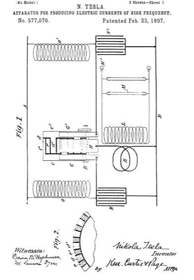
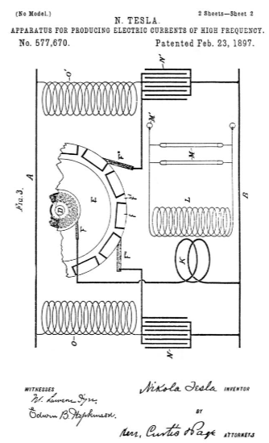

Descarga la patente original en esté enlace



Que se sepa que yo, NIKOLA TESLA, ciudadano de los Estados Unidos, residente en Nueva York, en el condado y en el estado de Nueva York, he inventado ciertas mejoras nuevas y útiles en los aparatos para producir corrientes eléctricas de alta frecuencia, de que a continuación es una especificación, haciendo referencia a los dibujos que acompañan y forman parte de la misma.
El aparato para convertir corrientes eléctricas de carácter ordinario en aquellas de alta frecuencia, que hasta ahora he mostrado y descrito en las solicitudes de Patente de Cartas, generalmente ha comprendido un condensador y un controlador de circuito operado por un dispositivo motriz adecuado y que actúa para cargar alternativamente el condensador de una fuente de alimentación adecuada y descargarlo a través de un circuito de carácter tal que haga que la descarga sea de muy alta frecuencia. Para muchos propósitos, se ha encontrado ventajoso construir el circuito-controlador con segmentos aislantes y conductores de igual longitud, de modo que el condensador esté conectado con su circuito de descarga durante la mitad del tiempo solamente. De esto se deduce que el circuito de trabajo, o aquel en el que las corrientes de alta frecuencia se desarrollan en forma para aplicación práctica,
Para ciertos propósitos, es deseable para un funcionamiento económico que no se detenga el flujo de tales corrientes, y mis mejoras actuales se han ideado con el objetivo de aumentar la producción de un aparato dado proporcionando medios por los cuales, sin adiciones materiales a o como complicación de tal aparato, pueden producirse de este modo corrientes de alta frecuencia de forma continua o sin períodos de descanso.
En términos generales, la mejora consiste en la combinación de dos condensadores con un circuito-controlador de tal carácter y operado por un solo dispositivo motriz para cargar y descargar dichos condensadores alternativamente, por lo que uno se descargará mientras que el otro se carga, y Por el contrario.
En los dibujos adjuntos a la presente, la Figura 1 es una ilustración esquemática de la disposición y las conexiones de circuito de la invención. La figura 2 es una vista en sección de una parte del conmutador empleado; y la figura 3 es un diagrama similar al de la figura 1, ilustrativo de una realización modificada de la invención.
Sea AB los dos conductores de cualquier circuito del que se deriva la energía que se va a convertir en una corriente de alta frecuencia.
C es un controlador de circuito o conmutador, una parte solo por conveniencia se muestra en las figuras. Está diseñado para ser girado por cualquier dispositivo motriz adecuado, del cual, sin embargo, solo se muestra el eje D, y su plan de construcción es el siguiente:
Las letras cc' designan dos cabezas de metal o piezas fundidas con partes salientes dd' , que, cuando las dos cabezas se juntan y aseguran a un cubo o eje, se entrelazan, como se muestra en los dibujos.
Los espacios entre dos proyecciones o barras adyacentes dd ' son iguales en arco al ancho de una de dichas barras y están rellenos con bloques e , preferiblemente de metal, aislados de las otras partes conductoras del dispositivo. Mediante la interposición de mica u otro material aislante adecuado, las dos cabezas o piezas fundidas cc ' se aíslan entre sí. Sobre la periferia de este conmutador llevan tres escobillas GG ' H, las dos primeras descansando sobre las porciones metálicas continuas de las dos cabezas, respectivamente, estando la última en posición de apoyarse sobre los salientes dd ' y los bloques e alternativamente.
Para que las escobillas puedan transportar cualquier corriente que demande el funcionamiento del aparato, se fabrican con una gran sección transversal, siendo la escobilla H aproximadamente igual en anchura a una de las proyecciones o segmentos dd ' , o bien a el espacio entre segmentos adyacentes, de modo que al pasar de uno entre en contacto con el siguiente.
La escobilla H se conecta a la principal B a través de una bobina primaria K de baja autoinducción en relación inductiva a una secundaria L, que constituye la fuente última de la corriente de alta frecuencia que el aparato está diseñado para desarrollar y que alimenta un circuito. que contengan tubos de vacío M, lámparas de un solo terminal M ' u otros dispositivos adecuados. Las escobillas GG ' están conectadas con la principal B mediante condensadores NN ' , respectivamente, y con la principal A mediante bobinas de autoinducción o estrangulamiento OO ' , utilizándose estas últimas para que se pueda tomar la descarga inductiva de la energía acumulada en ellas. ventaja de cargar los condensadores.
El funcionamiento del aparato así descrito es el siguiente: Mediante la rotación del conmutador C se hace pasar la escobilla H sobre los salientes d , cerrando los circuitos a través del primario K y los dos condensadores alternativamente. Estos dos circuitos están tan ajustados que tienen la misma capacidad, autoinducción y resistencia. Cuando dicho cepillo está en conexión eléctrica con cualquier saliente d ' de la parte c ' el circuito se cierra entre la red A y B a través de la bobina O ' , la escobilla G ' , la escobilla H y la bobina K. Por lo tanto, se acumula energía en la bobina O ' . Al mismo tiempo, el condensador N ' se cortocircuita a través de la escobilla G ', cepillo H y bobina K, y descarga a través de este circuito la energía almacenada en él, siendo la descarga en forma de una serie de impulsos que inducen en el secundario L impulsos correspondientes de alto potencial. Cuando la escobilla H rompe el circuito a través de la bobina O ' , la descarga de alto potencial o "patada" de esta última se precipita y recarga el condensador N ' , pero tan pronto como la escobilla H pasa por encima del bloque intermedio e y alcanza el siguiente segmento dcierra el circuito a través de la bobina O y cortocircuita el condensador N, de modo que las corrientes de alta frecuencia de uno u otro de los dos condensadores fluyen a través del primario K prácticamente sin interrupción. Por tanto, sin aumentar el tamaño o la potencia del dispositivo motriz o sin complicar en ningún grado material el conmutador, estos dispositivos están hechos para realizar una doble función y la salida del aparato en su conjunto aumenta considerablemente. En la figura 3 he ilustrado una forma modificada de conmutador para este aparato, que comprende un disco E, de metal, pero aislado de su eje. La periferia de este disco se divide en segmentos conductores y aislados mediante la inserción en el mismo de bloques metálicos aislados f . El ancho circunferencial de estos bloques es tres veces mayor que el de los segmentos conductores.f ' . Un cepillo F se apoya sobre una parte metálica continua del disco o sobre un anillo continuo en conexión eléctrica con los segmentos f ' y está conectado con un terminal del primario K. Los cepillos F' F'' se apoyan en la periferia del disco E y están conectados al B principal a través de los dos condensadores, respectivamente. Estos cepillos son capaces de ajuste angular, de modo que se puedan ajustar para que se apoyen sobre el disco en dos puntos cualesquiera.
De la explicación de la operación ya dada se desprende que cuando las dos escobillas F' F'' se colocan de manera que una abandone un segmento f ' en el instante en que la otra entra en contacto con un segmento f' el efecto de carga y la descarga de los condensadores es la misma que en la instancia anterior. La capacidad de variar las relaciones de las escobillas, sin embargo, que posee esta forma tiene la ventaja de permitir no solo una carga y descarga alterna de los condensadores, sino su carga y descarga simultáneas en arco múltiple, por lo que la frecuencia de la corriente de descarga esta reducido.
También es evidente que todas las diferencias de fase en la carga y descarga de los condensadores pueden asegurarse de manera similar y la frecuencia puede variar dentro de amplios límites. Por supuesto, se puede hacer que el mismo motor y controlador de circuito cargue más de dos condensadores en sucesión y los descargue en el mismo orden.
Lo que digo es:
Fechado el día 23 de Febrero de 1897. .
Nikola Tesla.